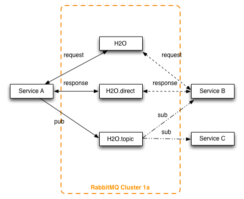
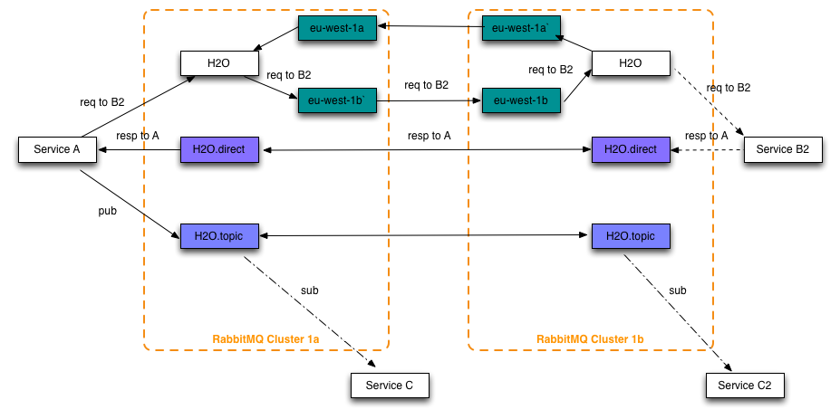

RPC
RPC is used extensively at Hailo to communicate between services, all synchronous calls made using the client package in the service layer use the RPC mechanism that we will describe in this chapter. Since Hailo services don't listen on any ports (and our service discovery does not support this) we need some other method of communication, we currently use RabbitMQ as our message bus to solve this issue.
Before we explain how we use RabbitMQ we need to first explain some RabbitMQ terminology:
- broker: A broker is a RabbitMQ instance that receives messages from publishers (services) and routes them to consumers (also services).
- exchange: An exchange is a "message routing agent" that receives messages and routes them to queues based on the exchange type and any configured bindings.
- queues: A queue is a buffer than consumers consume from
- bindings: Bindings are used to configure the exchange and create mappings between the exchange and a queue.
Exchanges
Now we can start explaining how we use RabbitMQ, first we need to explain how RabbitMQ is configured. There are three exchanges that facilitate the service to service communication:
- The
h2oexchange is an exchange that uses custom plug-in (called the hailo magic exchange) which is based on the official header exchange however has extra logic for handling weighting rules. You can think of it as a smart router that makes forwarding decisions based on the message headers. By default every new request gets processed by it and its job is to find a recipient. The recipient of the message may be in the current availability zone or it may be in another one. By default all messages are contained in a single AZ as long as there is a service to process them. The big benefit of this set-up is that the only requirement for a service to service communication to happen is the sender to know the name of the recipient. Our platform makes it possible for many instances (same or different versions) of a service to run simultaneously. In such a case the traffic will be load-balanced between all active instances (regardless of their version). - The
h2o.directexchange is a normal RabbitMQ direct exchange that is used for direct communication to specific instances, this is mainly used for RPC responses. - The
h2o.topicexchange is used for Pub/Sub over RabbitMQ, this is separate from the Pub/Sub over NSQ we discussed and is mainly used for monitoring and discovery.

Queues
Typically each instance of a service will have its own queue which allows the service to receive messages from RabbitMQ. The queue is created when a service starts and its name looks something like this com.hailocab.service.SERVICE_NAME-UUID. Once the queue is created the service starts consuming from the queue.
Bindings
As mentioned bindings are used to map requests from the exchanges to queues, for RPC we use two sets of bindings, one between the h2o.direct exchange and the service queues and another between the h2o exchange and the service queues.
The h2o.direct binding is created by the service when it starts up just like the queue and it is used to ensure that the service gets any messages intended for only that instance such as responses and heartbeats from the discovery service.
The h2o binding is used for load balancing requests to the services, the bindings contain additional meta-data or headers (such as the service name and weight) which are used by the magic exchange plug-in to ensure that requests are sent to the right service and to balance the traffic based on the weighting rules. The creation process is also slightly more complicated as this is created by the binding service, this will be discussed in the linked chapter.
Federation
In the diagram above you saw how Rabbit communicated in a single AZ, the diagram showed the AZ being completely isolated however in practice this is not how RabbitMQ is configured. Each exchange is instead federated allowing one service in zone A to talk to another in zone B.
Federation is important in ensuring high availability because when an instance of a service becomes unresponsive in one zone we cant to ensure that requests don't failing, if the zones were isolated then this would not be the case as there would be no other instances that could handle the requests. By federating the requests you can ensure that service remains unaffected as there are other instances that handle the traffic.

Deadletter
If a message cannot be routed to a recipient (because the recipient service is not there or is crashing and cannot process anything ) by default it will go into a deadletter queue. Inspecting the deadletter queue for messages is a great way of debugging the state of an AZ when in doubt. You can inspect the content of several messages in the deadletter queue using the "GetMessage" button on the RabbitMQ admin page to get some context.